01 — Cockpit agronomique
La page de couverture
Titre serif à deux registres (romain + italique chlorophylle), chapô court, registre de métadonnées à droite (jour, campagne, alertes critiques) et deux actions : « Actualiser » en plein chlorophylle, « Guide du cockpit » en filet. Les chiffres clés suivent une grille éditoriale sans encadrés : filet supérieur, valeur serif, unité mono, légende. La carte d'assolement et la fiche parcelle occupent la seconde double page.
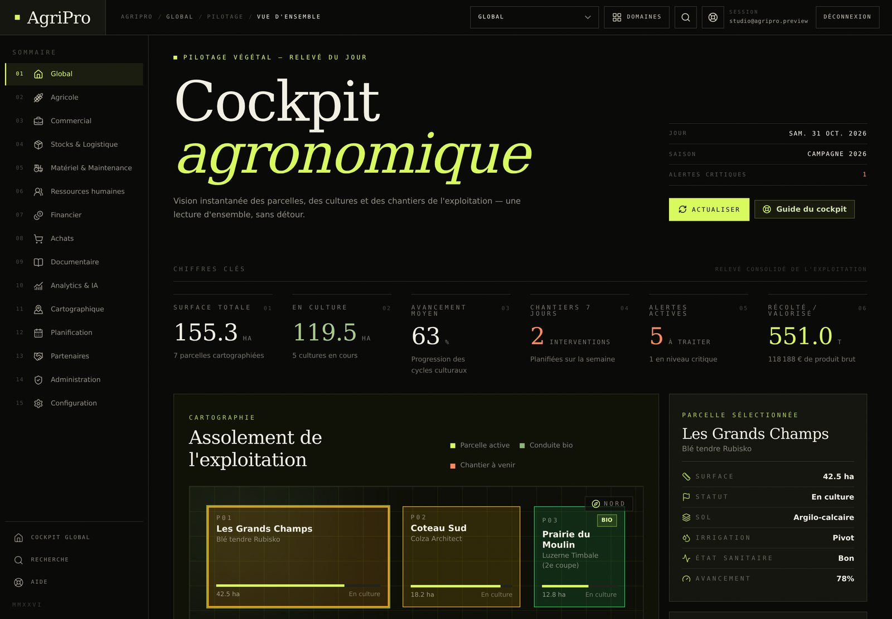
Données réelles · 155,3 ha · 7 parcelles · campagne 2026
02 — CRM & partenaires
Le grand livre commercial
Même en-tête que le cockpit, donc même rythme : sur-titre, titre serif, chapô, registre à droite. Les quatorze vues du CRM forment un index éditorial — mono, souligné d'un filet chlorophylle pour la vue active — et non une rangée de pastilles. Les indicateurs passent en tableaux de trois colonnes, chiffres serif à séparateurs fins, icônes discrètes en tête de colonne.
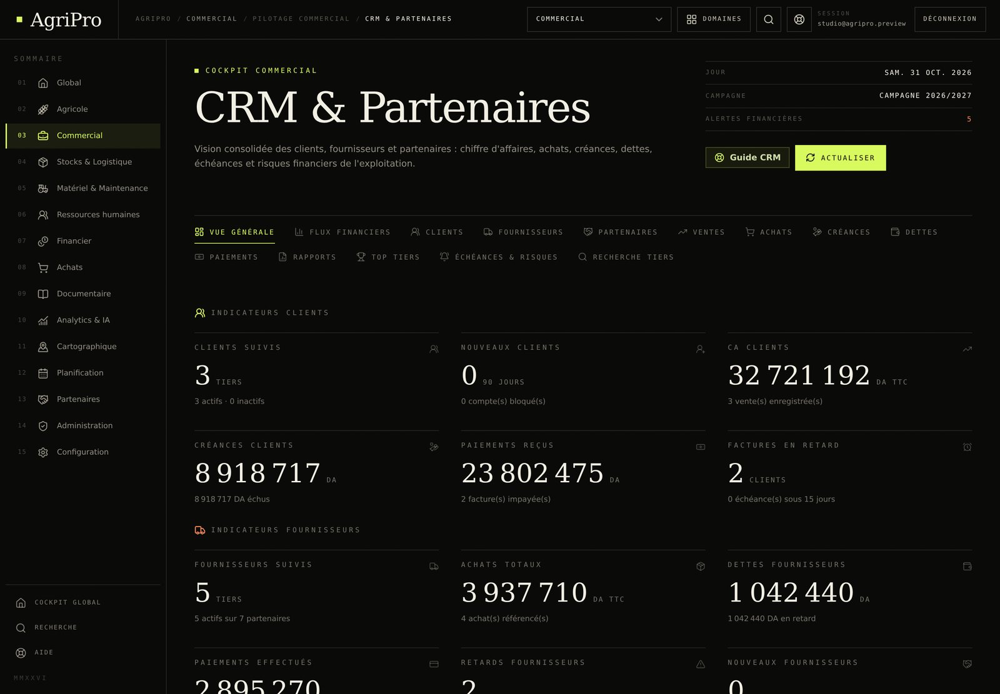
Montants 32 721 192 DA · séparateur de milliers U+202F
03 — Parcelles & cultures
Le formulaire devient un index
L'en-tête de page est factorisé (page_hero) : le bandeau
d'encadré disparaît au profit d'un filet supérieur. Les quatre compteurs
de filtrage suivent la même primitive que les chiffres clés du cockpit,
et la barre de filtres reprend des champs à filet unique, sans halo ni
ombre.
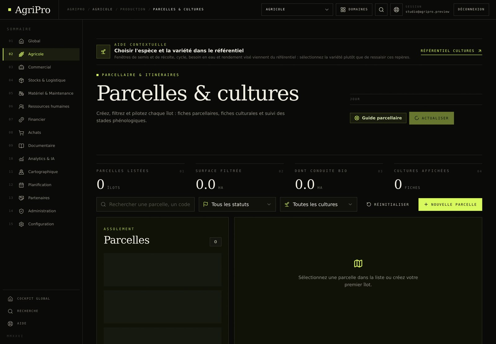
État de chargement du jeu de démonstration visible sur les listes
04 — Guide agricole
La bibliothèque
Le guide abandonne sa carte encadrée et son halo de recherche : le
titre respire sur l'encre, la recherche devient une ligne soulignée, et
les huit sections du guide utilisent le même index que le CRM. Les six
totaux éditoriaux suivent la primitive stat.
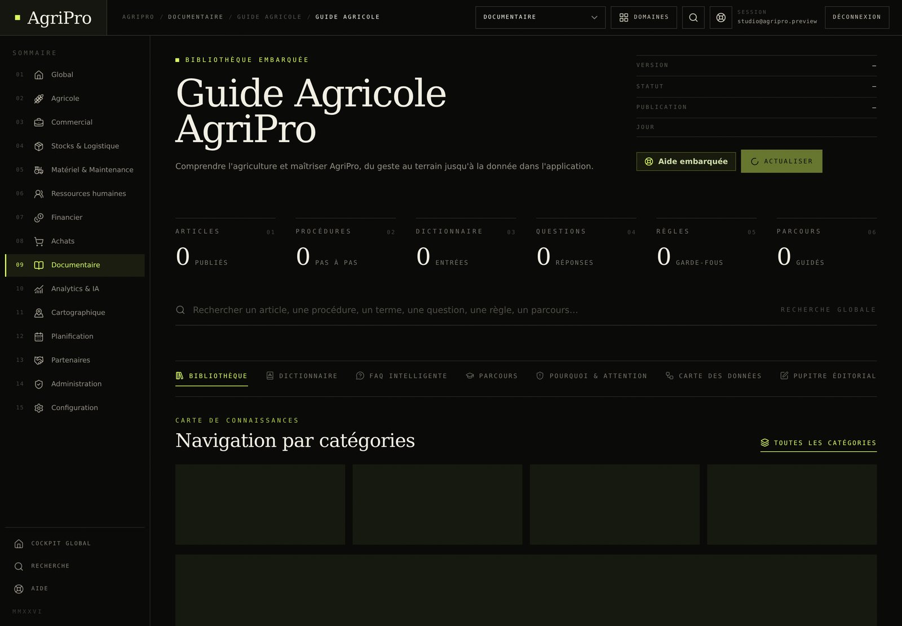
État vide : le seeder du guide n'a pas été rejoué dans cet aperçu
05 — Référentiel cultures
L'herbier
Le titre du référentiel conserve sa phrase-taxonomie en serif, le registre de droite reprend l'inventaire, et les tuiles de couverture deviennent des chiffres à filet. Les squelettes de chargement sont dessinés comme des lignes éditoriales plutôt que comme des blocs.
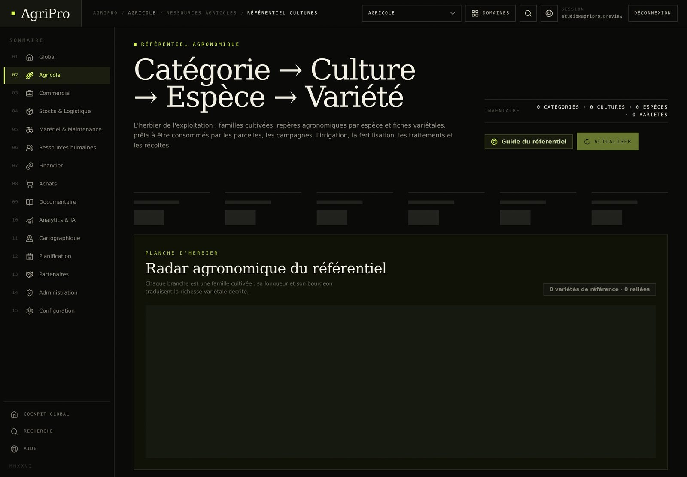
État vide : référentiel non peuplé dans cet aperçu
06 — Cartographie
La carte et ses outils
L'en-tête de la cartographie est passé à page_hero : le
sur-titre géomatique, le titre serif, le chapô et le registre de droite
(jour, contours) suivent désormais le même rythme que le cockpit. Les
panneaux intérieurs — barre d'îlots, outils de dessin, navigation —
restent le prochain chantier : ils gardent leurs encadrés.
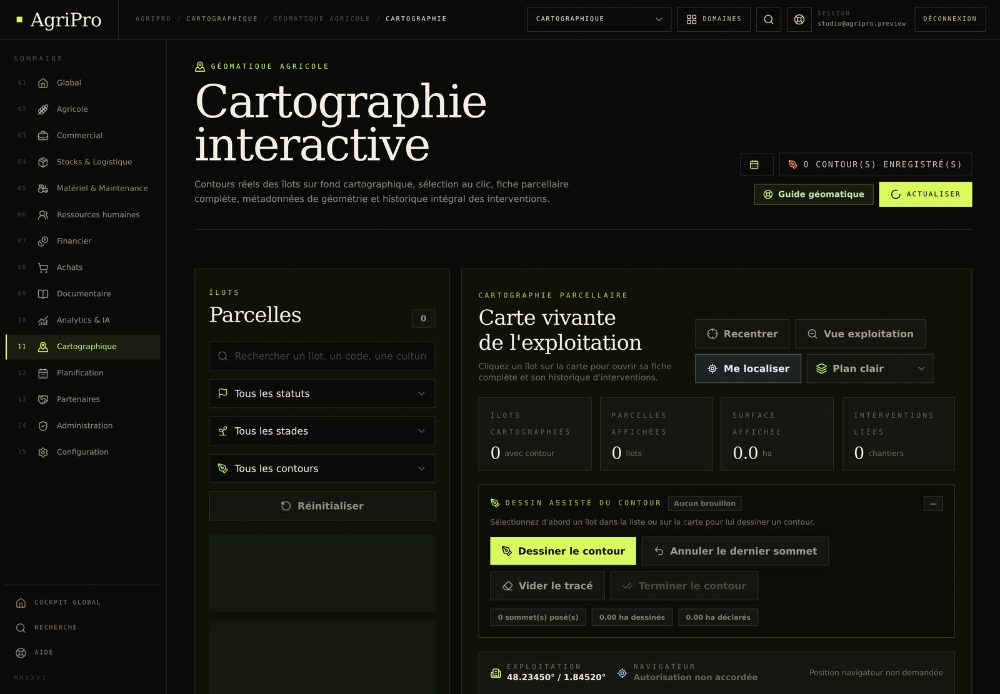
En-tête migré · panneaux de dessin encore encadrés
07 — Mobile
390 px, même maison
Le masthead se resserre : marque, fil d'Ariane, aide, session et menu. Le registre passe sous le chapô, les actions restent sur une ligne, et les chiffres clés s'alignent en deux colonnes sans perdre la serif.
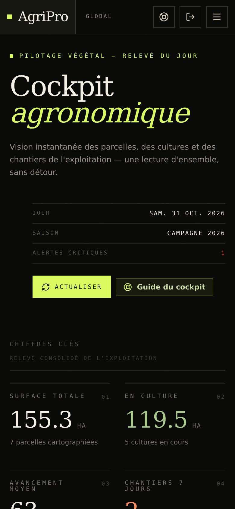
08 — Ressources humaines
Le registre du personnel
La page RH n'a plus d'en-tête maison : elle hérite de
page_hero et de son registre (« Jour », « Absences » en
vermillon). Les six indicateurs passent sur la primitive
stat — filet supérieur, valeur serif, unité mono — et la
barre de filtres se compose d'une ligne de recherche pleine largeur,
de sélecteurs à filet unique et de deux actions carrées.
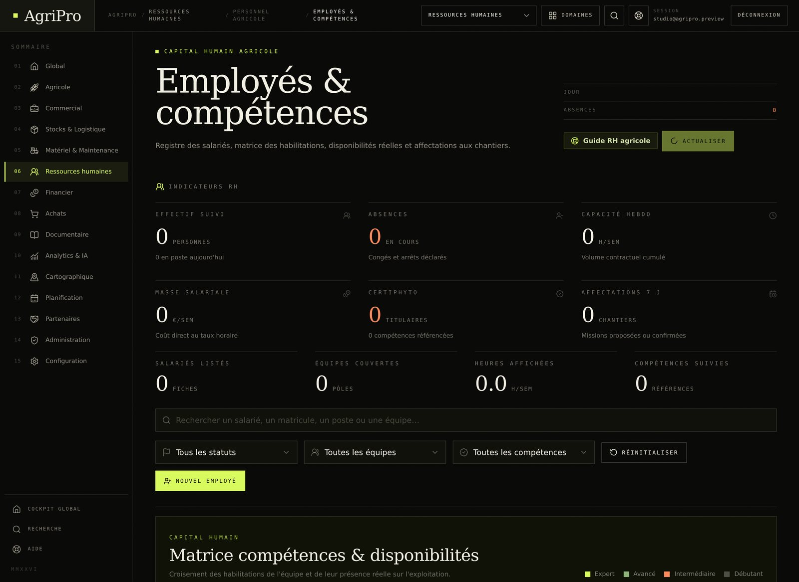
Jeu de démonstration RH non peuplé · structure et typographie visibles
09 — Charges & dépenses
La lecture du registre
Le registre financier ouvre par un titre de section numéroté (« Filtres », puis « Lecture du registre ») et deux étiquettes de portée. Les filtres perdent leur carte encadrée : champs à filet, sélecteurs à chevron discret, périodes en pastilles mono et « Réinitialiser » en bouton fantôme aligné à droite.
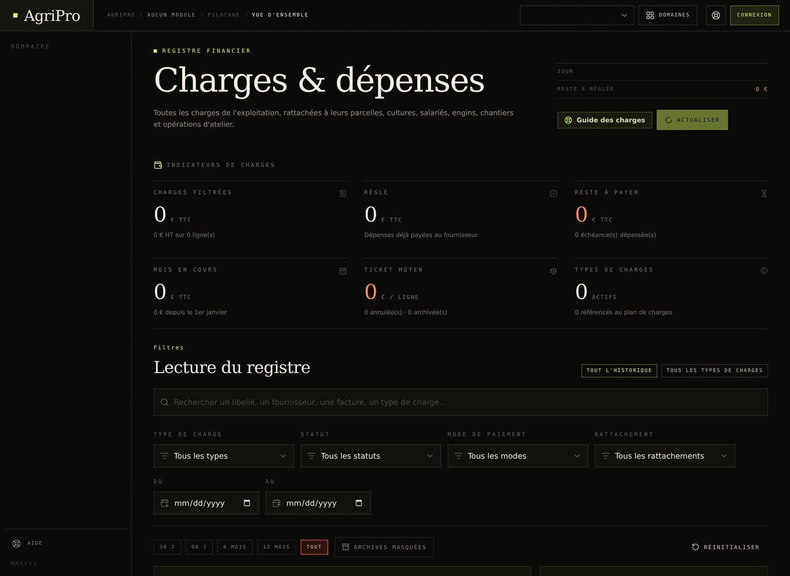
Registre vide dans l'aperçu · mise en page complète
10 — Administration
Les droits, en index
Les onze sections de l'administration ne sont plus des boutons pleins :
elles forment un index souligné, filet chlorophylle pour la section
active, comme les vues du CRM. Les indicateurs de gouvernance suivent
stat, et la barre de filtres s'ouvre sur un champ unique
avant les sélecteurs de statut, rôle et équipe.
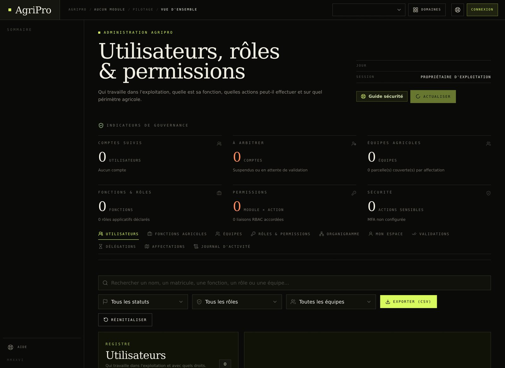
Comptes non peuplés dans l'aperçu · navigation et filtres réels
11 — Recherche globale
Une seule ligne, puis les filtres
La console transversale abandonne le halo dégradé de sa barre de recherche : le champ devient une ligne soulignée, large, avec l'indicateur de balayage à droite. Les trois compteurs passent en chiffres à filet, les dates en champs à icône, les périodes en pastilles mono.
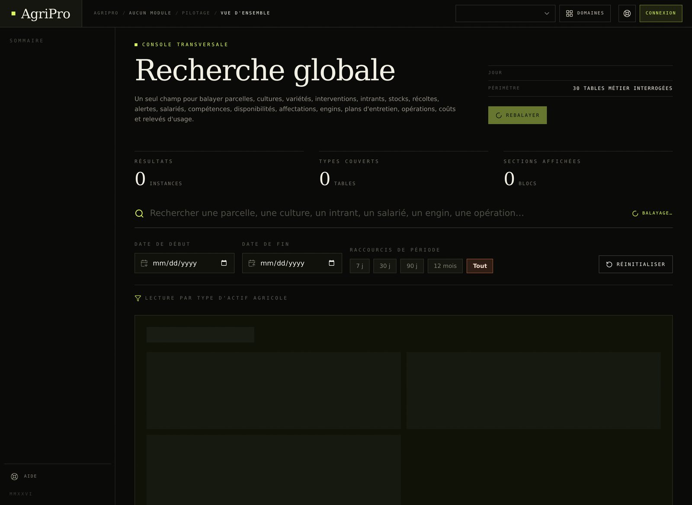
Recherche vide dans l'aperçu · les 30 tables sont interrogées en production
12 — Configuration
Le titre porte l'italique
La configuration reprend page_hero avec un titre à deux
registres — romain puis italique chlorophylle — et un registre de
session. L'avertissement métier (« Les refus sont prioritaires »)
reste sur un filet vermillon. Les messages d'erreur passent eux aussi
au filet latéral, avec une action « Réessayer » carrée.
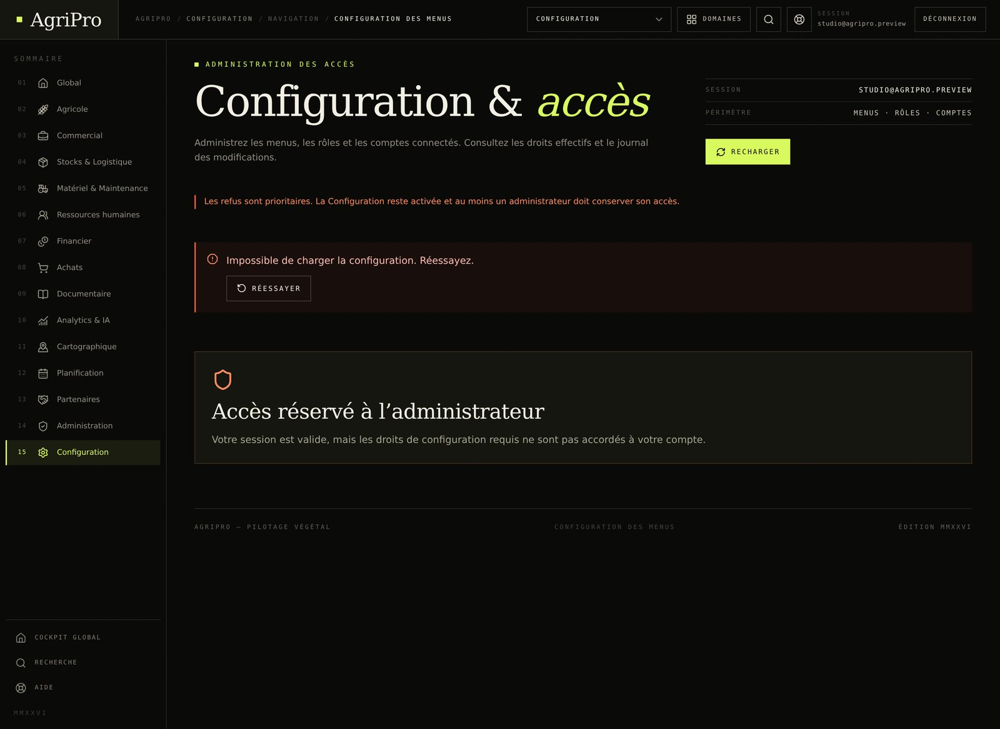
Service de menus absent de l'aperçu · message d'erreur réel